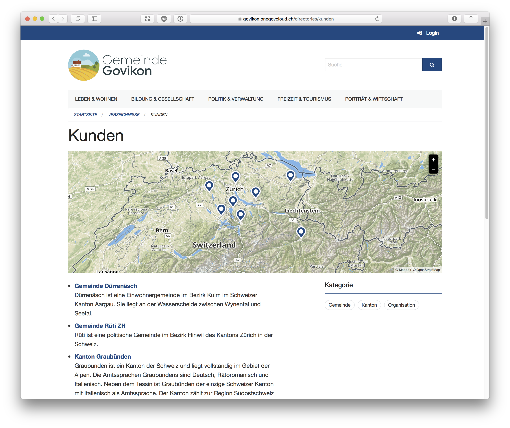
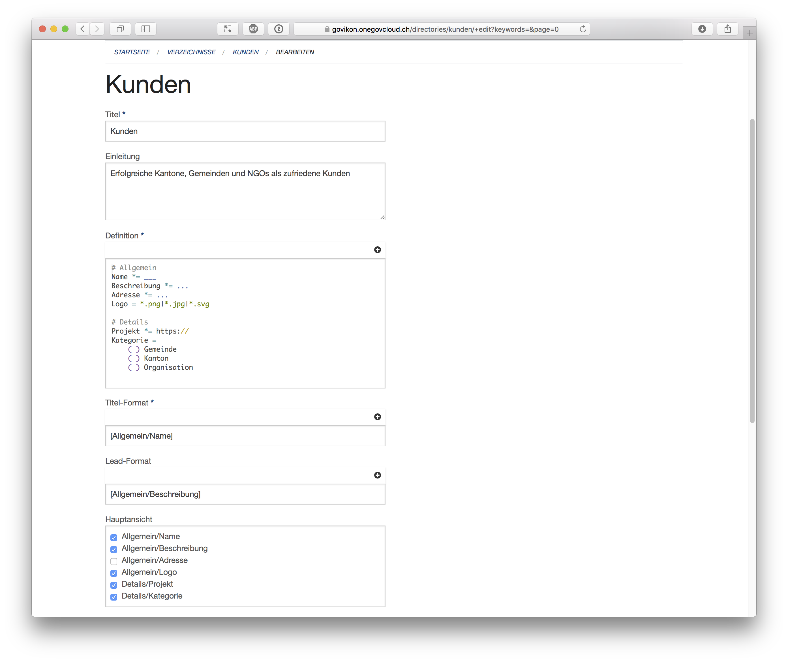

Strukturierte Daten in Verzeichnissen
Weg von Themen
Mit dem Inhaltstyp 'Thema' bietet die OneGov Cloud eine flexible Art um Informationen zu präsentieren. Der Inhaltstyp 'Thema' ist der richtige Ansatz, solange entweder keine Schema vorhanden ist (für einfache Artikel) oder wenn quasi-strukturierte Inhalte sorgfältig eingepflegt werden.
Unstrukturierte Inhalte - selbst wenn diese sorgfältig gepflegt werden - haben aber den Nachteil, diese sich eben auch nur unstrukturiert nutzen lassen. So können einfache Listen nicht nach bestimmten Merkmalen gefiltert oder die Einhaltung eines vordefinierten Schemas kann nicht sichergestellt werden. Die neu entwickelten Verzeichnisse schaffen hier Abhilfe.
Hin zu Strukturen
Die OneGov Cloud kennt bereits strukturierte Inhalte. Veranstaltungen sind beispielsweise hochstrukturiert, ebenso Personen. Da Personen als strukturierter Inhaltstyp erfasst werden, können diese auch mit Themen verknüpft werden. Zusätzlich gibt es Formulare als Inhaltstyp mit benutzerdefinierten Schemata.
Benutzerdefinierte Schemata sind in der Entwicklung aufwändig. So kann bei Formularen das E-Mail-Feld beispielsweise verschiedene Namen tragen sowie mal oben und mal unten im Formular auftauchen.
Es muss daher über Formcode definiert werden, was für Felder existieren und was deren Funktion ist. Verzeichnisse sind in dieser Hinsicht den Formularen ähnlich. Darum setzen wir bei Verzeichnissen wie schon bei Formularen auf Formcode.
Flexibilität hat Ihren Preis
Je flexibler ein Tool, desto komplizierter ist es in der Bedienung. Je weniger flexibel ein Tool, desto weniger nützlich ist es in der Nutzung. Am Ende besteht die Kunst darin einen guten Mittelweg zu finden.
Wir glauben bei Verzeichnissen den guten Mittelweg gefunden zu haben. Bevor wir die Details beschreiben, können Sie hier ein Beispiel-Verzeichnis ansehen:

Freie Defintion der Felder
Verzeichnisse können wie Formulare jede Art von Feldern beinhalten. Alle Einträge des Verzeichnisses haben dabei die gleichen Felder und diese sind garantiert konsistent. Konsistent heisst, dass wenn ein Feld als Pflicht markiert wird, die OneGov Cloud sicherstellt, dass alle Einträge auch wirklich einen Wert im entsprechenden Feld haben. Das gilt auch, ein zusätzliches Feld erst später hinzugefügt oder ein bestehendes Feld verändert wird.
Titel und Lead
Mit frei gewählten Feldern ist nicht mehr direkt gegeben, welches Felder den Titel bzw. welches den Lead ausmacht. Wir unterstützen deshalb ein freies Textformat. Die Konfiguration erfolgt auf einfache Art und Weise.

Darstellung
Nicht alle Felder werden direkt öffentlich angezeigt. Jedes Feld kann entweder versteckt bleiben, und es kann definiert werden in welchem Inhaltsblock dieses angezeigt werden soll. Diese Zuordnung erfolgt über eine einfache Konfiguration. Sichtbare Felder werden automatisch für die Volltextsuche indexiert.
Filter
Wie bereist erwähnt, werden Filteransichten erst dank vordefinierter Strukturen möglich. Werden zum Verzeichnis Informationen als Multiple-Choice erfasst, so können diese als direkt als Filter verwendet werden.
Dabei ist der Filter spezifisch an den Feld-Typ geknüpft. Multiple-Choice Kategorien können beispielsweise kombiniert gefiltert werden (Sport und Fussball). Single-Choice Attribute hingegen sorgen für einen exklusiven Filter (Ja oder Nein).
Koordinaten
Einträge werden standardmässig auf einer grossen Karte angezeigt. Dies ermöglicht eine attraktive Darstellung von Inhalten und macht es für den User einfach Angebote in seiner Nähe zu finden.
Import
Die Daten für Verzeichnisse existieren oftmals schon irgendwo als Excel-Datei. Verzeichnisse unterstützen deshalb einen direkten Import. Dieser ist allerdings klar auf einen initialen Import ausgelegt. Ein laufender Austausch ist zwar möglich, aber nicht unbedingt empfehlenswert. Besser ist es die Daten direkt in der OneGov Cloud zu pflegen.
Vorlagen
Wir haben grossen Wert auf die Vereinfachung von Formcode gelegt (Formulare einfach erstellen mit Formcode). Auch Verzeichnisse sollen so einfach wie möglich definiert werden können. Trotzdem ist das Erstellen eines Verzeichnisses eher etwas für erfahrene Benutzer. Wie bei den Formularen möchten wir deshalb in der Zukunft gewisse Vorlagen bieten. Für den Moment verzichten wir jedoch noch darauf, da wir erst beobachten möchten, wofür Verzeichnisse effektiv eingesetzt werden. Erst wenn dies klar ist, können wir auch gute Vorlagen definieren.
Auch möchten wir in der Zukunft eine (optional kostenpflichtige) Erfassung von neuen Einträgen durch anonyme Benutzer zulassen. Diese Anfragen werden wie gewohnt über das Ticket-System in einen Workflow zur Publikation eingebunden.
Bei der Erstellung Ihres ersten Verzeichnisses sind wir Ihnen gerne behilflich. Da Verzeichnisse auch versteckt erstellt werden können, ist es auch kein Problem, wenn Sie einfach mal ein Verzeichnis zum Ausprobieren erstellen.
OneGov Cloud - Smart Government Platform: https://onegovcloud.ch